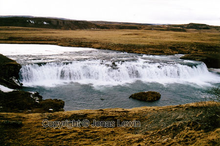
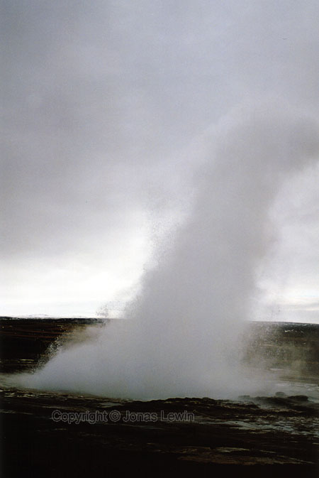

Iceland, Water falls and hot water springs (a.k.a. Geysers), 2001-03.
|
A
small water fall, that we stopped to look at before continuing towards
Gullfoss. Do you see the people waking on the left side
of the picture? Now do you see the people walking here? Remember,
there is no fence to catch you if you fall on the very very slippery ice. Hot water springs
This
spring is called "Strokkur". If you walk too close to this one, or if you stand down wind, you can feel how 100 degree Celsius water feels like. I decided not to try that out. |